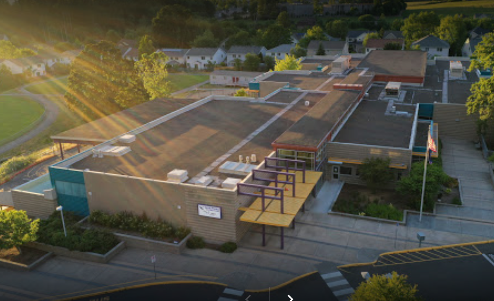

My School
Campus Life
Entrance
It was completed in 2001
This is the Entrance to Jacob Wismer Elementary School Owned by Beaverton School District. (Because of Covid there are now more then one Entrance. The entrance in the image above is for 2nd grade-left; 3rd grade-right,) Jacob Wismer sreves from Kindergarden to 5th Grade. It has 2 Levels.
School Library
It was completed in 2001
This is the Library in Jacob Wismer Elementary School. It is located in the 1st Floor and has ALOT of books! (Because there are very less helpers because of Covid, you can only borrow a limit of books, right now it is 3-6 depending on grade level.) The School Library also consits of a 'Technology Area', right before Library is Technology. We learn stuff in Ipads. It is very fun!
School Playground
It was completed in 2001
This is the School Playground. Left from there is a Basketball Court and on the right is a Scoccer field. Down from there is a baseball Field. These are the places where we can play during Recess. It is very fun! (Fields are closed if it is Raining!).
School Achievements
Winner will win a PRIZE!!!
The Eagle Run is the only Fundraiser for the PTO of Jacob Wismer. It is on May 13th this year (2022). The Eagle Run is like a Marathon. Whoever runs the most laps before time runs out wins! The TOP THREE will get special prizes. You can also donate at Pledge Star!!!
There is Reading, Writing and Math!
The State testing is for grades 3 to 5. For Grades 3-4 there is Reading, Writing and Math tests. For Grades 5, there is also Science tests. These tests will determine which School is the best, how Teachers can improve teaching and those stuff. Most of the Questions WILL be hard.
Whats's New
-
School Field Fertilized

The School Field has been Fertilized and now is ready to play in! Especially with the Eagle Run (see section above) and Field Day (see image above) coming sonner by time! After nearly 2 whole seasons, we can get back on the track and field. And it was just Fertilized! YAYYY!
New Entrances

We now have new entrances beacause of Covid-19 instead of just on Entrance!
1. Kindergarden's Entrance: Kindergraden teachers will guide them because they are to small.
2. First grade entrance is right next to Kindergarden's. It is next to the field. Teachers usually help them but sometimes the First Graders go by themselves.
3. Second grade entrance is right next to First Grade's. It is next to the Playground/ Undercover [Basketball court]!
4. 3rd grade entrance is on the opposite side of second grade. Right next to the Parking.
5. 4th grade entrance is next to 3rd grade, opposite of 1st grade, next to the end of parking area.
6. 5th grade entrance is the main entrance shown above in the Image. It is at the center fo the school!